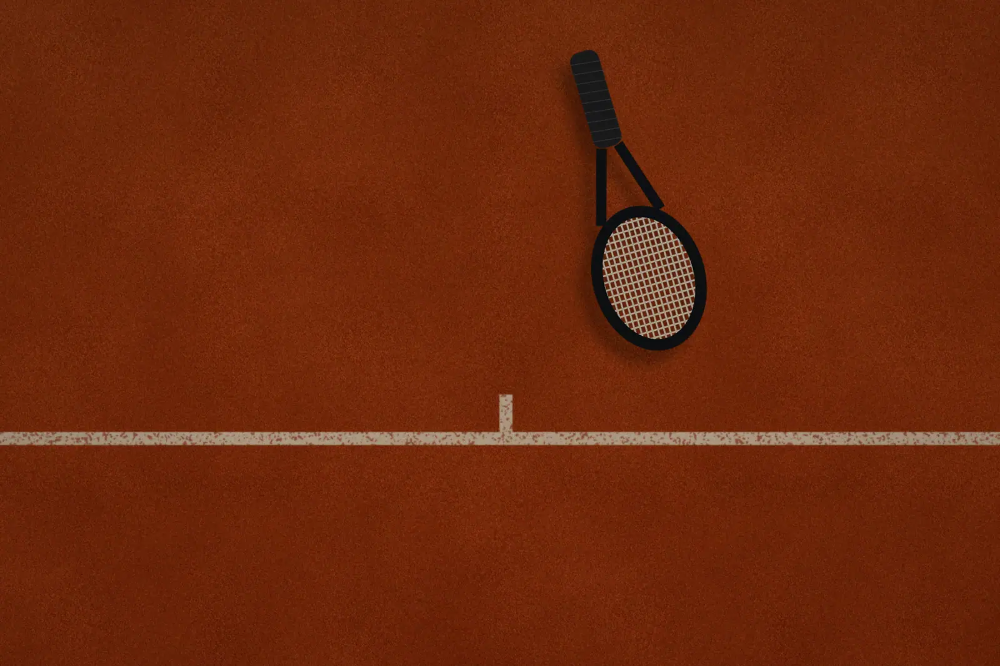
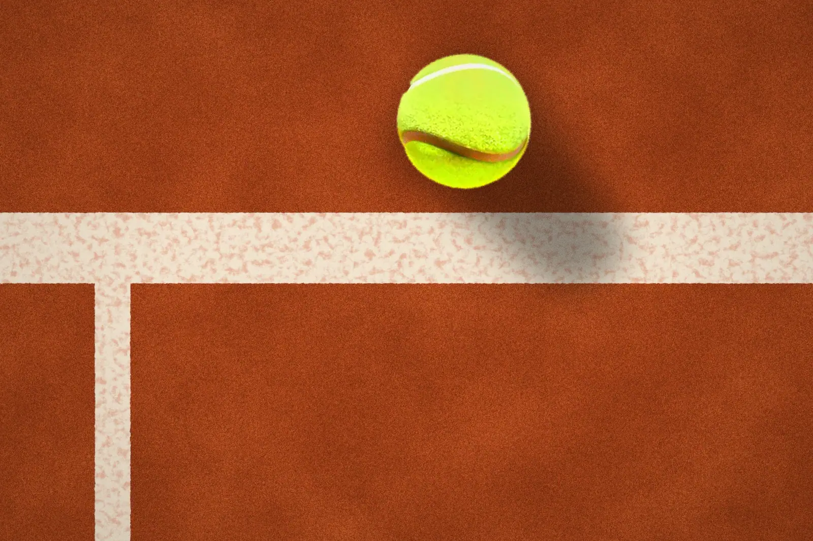

Июньский кубок: во Фьючерсе победили Ахметов / Зотов
Финал Фьючерса — 6:4 против пары Левин / Мельник. В Мастерсе финал — в субботу, 19 июня, в 20:00.
Показ: данные выдуманные
22материала
с 2023 года
Хван / Орлов против Оспанова / Савельева на центральном корте. Матч за 3-е место — в 18:00.
Финал Фьючерса — 6:4 против пары Левин / Мельник. В Мастерсе финал — в субботу, 19 июня, в 20:00.
Запись — до 5 июля в приложении, 32 места. Сумма КПР пары — от 7.0 до 8.0.
С Июльского кубка турнир — 32 пары, восемь групп по четыре; пару допускают, если сумма КПР — от 7.0 до 8.0.

16 пар. Четыре сеяные пары — в разных группах.

Финал Мастерса — 6:3 против пары Ильин / Каримов. Во Фьючерсе первыми стали Громов / Юсупов.
Информационные партнёры лиги